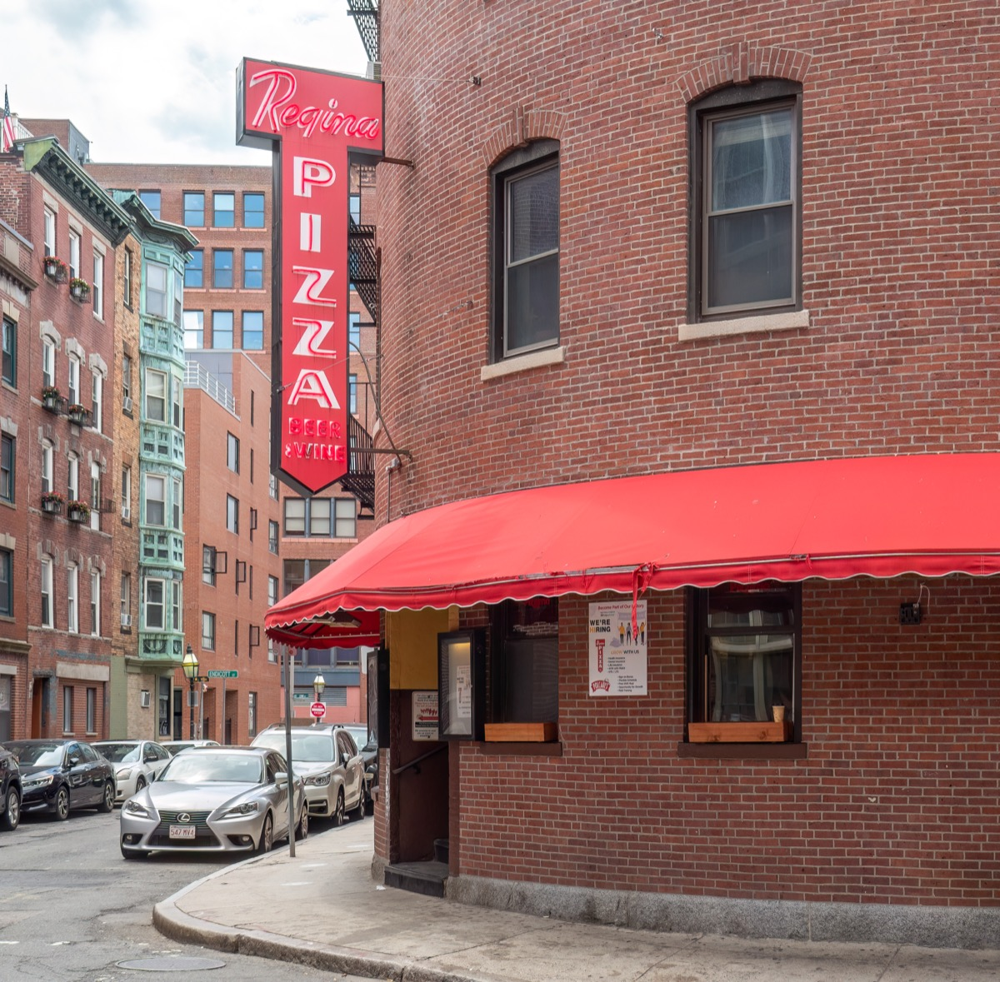

Most people walk half the Freedom Trail and stop in the North End. This challenge is the fix: all 16 stops in order, ticked off as you reach them, with the thing to look for at each and whether going inside costs money.
The short answer
The Freedom Trail challenge in ten parts
01
How the Freedom Trail challenge works
Follow the red brick line 2.5 miles from Boston Common to Charlestown. Do the 16 stops in order; each counts when you are there and have found the thing listed. Tick it off in the app or take a photo. No ticket or guide needed. Other routes: Boston challenges.
02
Stops 1–11: Boston Common to Faneuil Hall
About a mile. Under an hour if you keep moving, two hours with the paid sites.
Boston Common

The oldest public park in the country. Find the start of the red line in the sidewalk outside the Visitor Center.
Massachusetts State House

Bulfinch's 1798 capitol, dome gilded since 1874. Find the gold dome from the Common below, and the Shaw Memorial across Beacon Street.
Park Street Church

The 217-foot steeple from 1809 on Brimstone Corner. Find the plaque on the Tremont Street side.
Granary Burying Ground

Revere, Adams, Hancock and the Massacre victims, from 1660. Find the stone of Mary Goose, sometimes claimed as Mother Goose, near the Tremont wall.
King's Chapel and Burying Ground

The city's oldest burying ground, from 1630, beside a 1754 granite chapel. Find the winged skulls on the older gravestones.
Boston Latin School site and Benjamin Franklin statue

Site of the country's first public school, from 1635. Find the mosaic in the pavement out front, which most people step over.
Old Corner Bookstore

The city's oldest commercial building, from 1718, later publisher of Hawthorne and Thoreau. Find the authors' plaque on the School Street side.
Old South Meeting House

Where five thousand people met before the Tea Party in 1773. Find the tower clock, running since 1770.
Old State House

The 1713 seat of colonial government; the Declaration was read from the balcony in 1776. Find the lion and unicorn on the gable.
Boston Massacre site

Where British soldiers killed five men in 1770, including Crispus Attucks. Find the cobblestone ring and stand on it.
Faneuil Hall

Market below, meeting hall above, since 1742. Find the gilded grasshopper weathervane from Dock Square, then go upstairs for a free ranger talk. Halfway: eat here.
03
Stops 12–14: the North End
Three stops in half a mile, with the best food on the trail between them. See our North End guide.
Paul Revere House

Downtown's oldest house, from about 1680, and Revere's home for thirty years. Worth the twenty-minute visit. Find the overhanging second storey and diamond-paned windows.
Old North Church

The 1723 steeple where two lanterns hung on 18 April 1775. Find it framed by the Revere statue in the Paul Revere Mall: the best photo on the trail.
Copp's Hill Burying Ground

From 1659, with the Mathers and Prince Hall. From the Hull Street gate, find the ten-foot-wide Skinny House at 44 Hull Street.
04
Stops 15–16: Charlestown
The mile most people skip. Over the Charlestown Bridge to the Navy Yard; both stops free.
USS Constitution

Launched 1797, still commissioned, the oldest warship afloat. Find the copper sheathing on the hull below the waterline, originally from Paul Revere's mill.
Bunker Hill Monument

A 221-foot obelisk on the 1775 battlefield, 294 steps to the top. Find the end of the red line at the base. That is stop 16.
05
Timing: fast, normal or thorough
All three cover the full 16 stops; they differ in how much you go inside.
| Fast | Normal | Thorough | |
|---|---|---|---|
| Total time | About 2 hours | 3–4 hours | 6–8 hours |
| Go inside | Nothing; exteriors and burying grounds | Old South and Old State House or Revere House, plus Faneuil Hall and the ship | Everything open, plus the monument climb and both Charlestown museums |
| Food | A cannoli on Hanover St | North End or Quincy Market lunch, about 45 minutes | Coffee before, North End lunch, Warren Tavern after |
| Start by | 8am | 9am | 9am, when paid sites open |
| Cost | Free, plus transit | Roughly $15–$25 per adult, plus food | Roughly $30–$40 per adult, plus food |
| Way home | Ferry from the Navy Yard | Ferry from the Navy Yard | Ferry, or Orange Line from Community College |
| Good for | A morning; a second time through | Most first visits | History fans; a rainy day |
The trail is front-loaded, so be at Faneuil Hall by 11 and over the bridge by 2. See the one-day itinerary for a fuller plan.
06
What is free and what is paid on the Freedom Trail
Eleven of sixteen are free inside, one asks a donation, four charge admission. Check before you go.
| # | Stop | Inside | Notes |
|---|---|---|---|
| 1 | Boston Common | Free | Outdoor |
| 2 | Massachusetts State House | Free | Weekdays only; free tours |
| 3 | Park Street Church | Free | Open to visitors in summer |
| 4 | Granary Burying Ground | Free | Outdoor, closes at dusk |
| 5 | King's Chapel & Burying Ground | Donation for the chapel | Burying ground free |
| 6 | Boston Latin School site / Franklin statue | Free | Sidewalk and courtyard |
| 7 | Old Corner Bookstore | Free | Exterior only; restaurant inside |
| 8 | Old South Meeting House | Admission | Combined ticket with Old State House |
| 9 | Old State House | Admission | Combined ticket with Old South |
| 10 | Boston Massacre site | Free | Outdoor marker |
| 11 | Faneuil Hall | Free | Great Hall, National Park Service |
| 12 | Paul Revere House | Admission | Small fee; closed Mondays in winter |
| 13 | Old North Church | Admission | Courtyards and the Prado free |
| 14 | Copp's Hill Burying Ground | Free | Outdoor, closes at dusk |
| 15 | USS Constitution | Free | Photo ID for 18+; museum by donation |
| 16 | Bunker Hill Monument | Free | Climb may need a timed pass in season |
Paying for one thing? The Old South and Old State House combined ticket gives two interiors for one price. More in free things to do in Boston.
07
Where to eat along the way
Stops that fit the route without a detour, in trail order. Check hours before you go.
Thinking Cup, before you start
Serious coffee two minutes from the start of the line, and the only coffee stop until the North End.
Boston Public Market and Haymarket

Indoor market of Massachusetts producers where the trail crosses to the North End: oysters, cider doughnuts, sandwiches. Open-air produce stalls outside Fridays and Saturdays.
Quincy Market, if you want fast

Touristy, but chowder from a stall on the steps is a fair fifteen-minute lunch. The North End is better if you have 45.
Galleria Umberto
Sicilian square pizza by the slice, arancini, cash only, since 1974. The best and cheapest lunch on the trail. Closed after 2pm.
Mike's, Modern or Bova's for the cannoli
Mike's has the line, Modern fills shells to order and is the local pick, Bova's is open all night. Try two. More in best cannoli in Boston.
Regina Pizzeria, for a proper sit-down

The original Regina's, from 1926, between Copp's Hill and the bridge. Thin brick-oven pizza; see best pizza in Boston.
Warren Tavern, at the finish
Built in 1780, three minutes from the monument. A beer and a burger with all sixteen stops ticked is the correct end.
08
Getting there, getting back and what to bring
- Start: Park Street station (Red/Green); the red line begins outside. No useful parking, so take the T.
- Back: MBTA ferry from the Navy Yard pier to Long Wharf, subway fare, ten minutes. Or Community College (Orange), ten minutes from the monument.
- Bring: photo ID for the ship, comfortable shoes for cobbles, water in summer.
- Seasons: burying grounds and the ship close earlier in winter; North End feasts in July and August slow Hanover Street.
- More: the Freedom Trail guide for history and tours, plus best walks and Boston without a car.
FAQ
Freedom Trail challenge: common questions
What is the Freedom Trail challenge?
The 2.5-mile Freedom Trail done as a checklist: all 16 official stops in order, Boston Common to Bunker Hill. Follow it from this page or in the no bad days club app.
How long does it take to walk the whole Freedom Trail?
About two hours without going inside, three to four hours with lunch and a paid site or two, a full day if you go inside everything.
Is the Freedom Trail free?
Walking it is free, and 11 of 16 stops are free inside. Old South, Old State House, Paul Revere House and Old North Church charge admission.
How do you get back from the end of the Freedom Trail?
Take the MBTA ferry from the Navy Yard pier to Long Wharf: subway fare, ten minutes. Or walk ten minutes to Community College on the Orange Line.
Can you do the Freedom Trail challenge with kids?
Yes. Most families do the Common to the North End, about two miles, with a cannoli stop, then ferry across to see the ship. The full trail is long for under-eights.